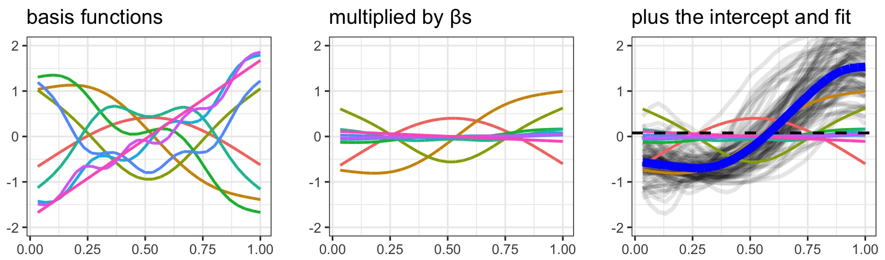

This tutorial provides an introduction to using Generalized Additive Mixed Models in intonation research, with some basic concepts, exploration of how GAM(M)s are fit, and an example modeling intonational tunes.

See here for a stand-alone web page introduction.
And for the hands-on version, see here to download the code as an RMarkdown document.
at the university of edinburgh
Introduction to Phonology (MSc)
2023
Phonetics and Laboratory Phonology
2023
Speech Production and Perception (perception module)
2024
Discourse Analysis (one-week prosody module)
2024
Flexibility and Adaptation in Speech Perception (guided research seminar)
2024
at ucla
College Teaching of Linguistics (LING 495)
Spring 2020
Phonology I (LING 120A)
Summer 2019
Experimental Phonetics (LING 104)
Winter 2020; Instructor: Sun-Ah Jun
Introduction to Applied Phonetics (LING 102)
Spring 2019; Instructor: Megha Sundara
Phonological Structures (LING 119A)
Spring 2018; Instructor: Meredith Landman
Phonology II (LING 165A)
Winter 2018; Instructor: Roslyn Burns
Introduction to Linguistic Analysis (LING 20)
Fall 2017; Instructor: Dylan Bumford